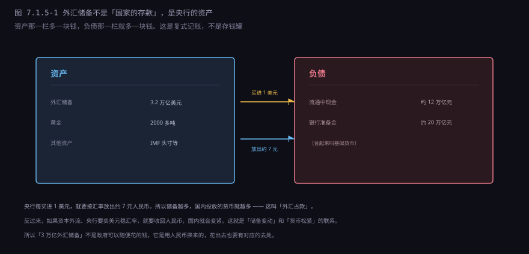
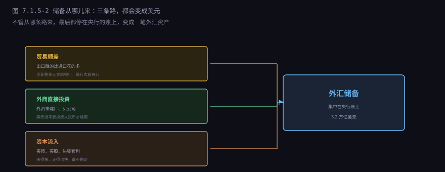
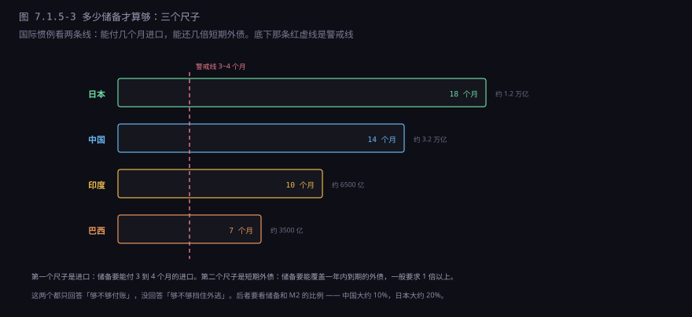
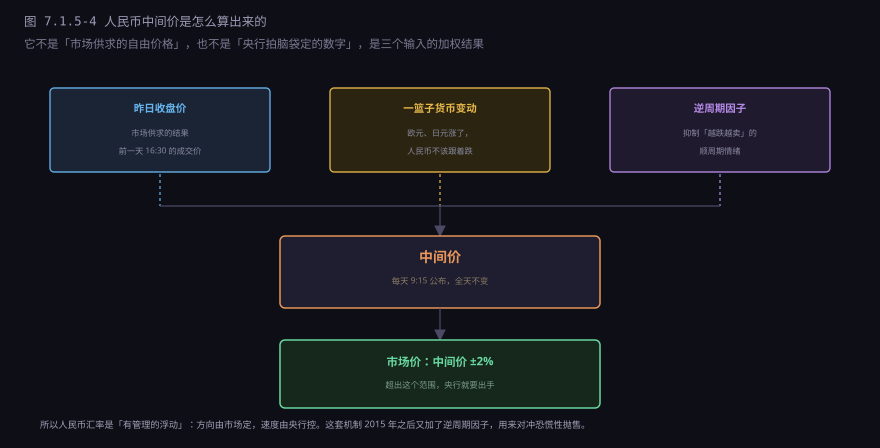
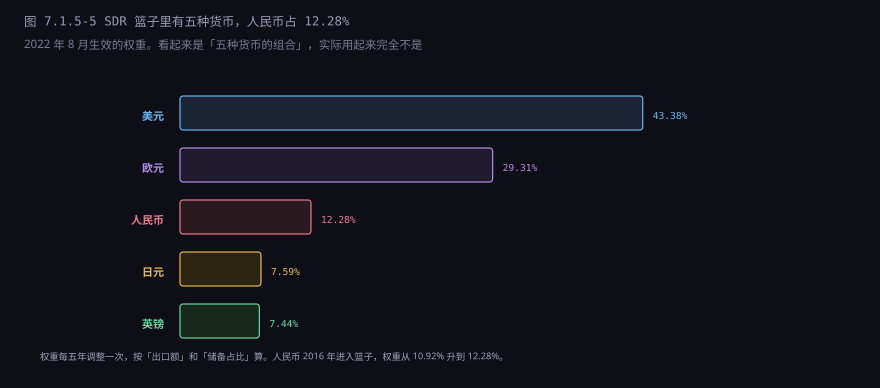
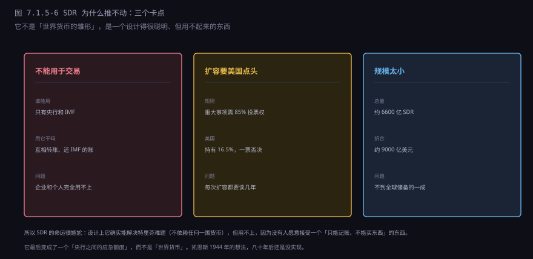

约 0.6 万字 · 6 张图 · 读完你能说清三万亿外汇储备到底是什么、 人民币汇率是怎么定出来的、SDR 为什么推了五十年还是推不动， 以及 7.1 章这五节合起来讲了什么
新闻里说「中国外汇储备 3.2 万亿美元」，听起来像国库里堆着这么多钱。 其实不是。
外汇储备是央行的资产。而央行的每一笔资产，都对应着一笔负债。 央行买进 1 美元，就要按汇率放出约 7 元人民币； 这 7 元进入流通，就变成了央行的负债（现金是央行的欠条）。

这个机制叫外汇占款。它是理解中国货币体系的一把钥匙： 过去二十年，中国的基础货币大量是靠「买美元」投放出去的， 而不是靠央行主动印钞。
所以「把外汇储备分给老百姓」这种说法，技术上不成立。 分了 3.2 万亿美元给居民，居民拿到的还是美元（或者换成人民币）， 但央行那边的负债没消——等于凭空多出一大笔钱，通胀立刻起来。 储备不是可以分配的财富，是央行的一张资产凭证。
那它能不能拿去做别的事？可以，但要「对冲」： 央行卖美元、收回人民币，资产负债同时减少。 这就是为什么央行的资产负债表会随着汇率干预而扩张或收缩—— 它不是被动的账本，是货币政策的工具。
储备不是天上掉下来的，它有三条来源，性质完全不同。

贸易顺差是最健康的一条。出口企业赚了美元，要换成人民币发工资、 买原料，就把美元卖给银行；银行再卖给央行。这条路上的钱有实物对应， 是「挣来的」。
外商直接投资是第二条。外资来建厂、买公司，带进来美元， 同样要换成人民币。这条路上的钱也较稳，因为工厂搬不走， 但利润可以汇出去。
资本流入是第三条，也是最不稳定的。热钱进来买债、买股、套利差， 图的是短期收益。它来得快，走得也快——2015 年人民币贬值时， 大量资金通过这条渠道外流，直接把储备从 4 万亿打到 3 万亿。
所以看储备的数字，不能只看总量，要看结构： 如果增长主要来自贸易顺差，那是健康的；如果主要来自资本流入， 那就是「借来的繁荣」，随时可能反转。
「够不够」这个问题，国际上有一套通用的尺子，主要看两条线。

第一条线是进口覆盖：储备要能付 3 到 4 个月的进口。 这个标准的逻辑是：万一出口突然断了（战争、制裁、危机）， 国家还能靠储备维持几个月的基本进口。
第二条线是短期外债覆盖：储备要能覆盖一年内到期的外债， 一般要求 1 倍以上。这个逻辑是：外资要撤、外债要还， 手里得有足够的美元应付。
还有第三条不常用但更严格的：储备和 M2 的比例。 它衡量的是「如果国内有钱人集体换汇，央行能不能接住」。 中国这个比例大约 10%，日本大约 20%。 这个数字越低，资本外逃的风险越大。
所以「3 万亿够不够」这个问题，取决于你问的是哪个风险： 付进口账，远远够；还短期外债，够；挡住大规模资本外逃，不一定够。 这就是为什么中国要维持资本管制——不是不想放开，是算过账。
这里有个更根本的问题：储备应该放在哪儿？
中国走的是「藏汇于国」：外汇集中在央行手里，企业和居民持有的海外资产相对少， 个人每年只有 5 万美元的购汇额度。政府控制力强，但资金使用效率低—— 三万亿大部分买了收益 2% 的美债。
日本是「藏汇于国 + 藏汇于民」：央行有 1.2 万亿储备， 但日本企业和个人在海外的资产超过 10 万亿美元，是储备的十倍。 这些钱在全球买资产、赚收益，回报比买美债高得多。
美国是「不需要藏汇」：它的储备只有几百亿美元， 因为美元本身就是储备，它不需要为「付进口账」准备外汇。 这是储备货币国的特权：不用攒钱，因为别人要你的钱。
三种模式没有绝对的好坏。藏汇于国，危机时不容易外逃，但效率低； 藏汇于民，效率高，但一旦预期反转，钱跑得比谁都快。 中国选前者，是因为金融体系还不够成熟、资本管制还没放开、出口导向需要汇率稳定。 这是一个发展阶段的选择，不是永久的设计。
储备不是越多越好，因为它有两个代价。
第一个是机会成本。储备大部分买了美国国债， 年化收益 2% 到 3%。如果这笔钱拿去投资国内基建、教育、医疗， 回报可能 6% 以上。这中间的差额，就是持有储备的成本。
三万亿储备，按 3% 的利差算，一年的机会成本是 900 亿美元。 这个数字不小，但换来的是「汇率稳定」和「危机时的缓冲」—— 值不值，取决于你怎么算这笔账。
第二个代价是货币投放。前面说过，买美元要放人民币。 储备越多，国内投放的货币越多，通胀压力越大。
所以央行要「对冲」：提高存款准备金率，把放出去的钱再收回来一部分； 或者发央票，让银行拿钱来买。这就是为什么中国的存款准备金率 长期在 10% 以上，而美国是 0——不是中国更谨慎， 是有外汇占款要对冲。
上一节讲过浮动汇率是「市场价格」，但人民币不是完全浮动的。 它是「有管理的浮动」，中间价的算法是公开的：

昨日收盘价代表市场供求。如果昨天市场把人民币卖到 7.30， 今天的中间价就会参考这个数。
一篮子货币变动代表「对美元以外货币的稳定」。 如果欧元、日元对美元大涨，人民币按理也该涨；但为了对一篮子稳定， 人民币对美元可能不涨反跌。
逆周期因子是 2017 年加进来的，专门对付「羊群效应」。 它的逻辑是：当市场一边倒地看跌人民币时，中间价会人为地往上调一点， 打破「越跌越卖、越卖越跌」的循环。 这个因子没有公开公式，是央行手里的一个「调节旋钮」。
所以人民币汇率既不是纯市场，也不是纯行政。 它是「市场供求 + 一篮子参考 + 逆周期调节」三者的加权， 权重不公开，随时可以调。这就是「有管理」的含义。
现在这套机制不是一天建成的，它经历了三次大改。
| 时间 | 改了什么 | 结果 |
|---|---|---|
| 1994.1.1 | 官方汇率与调剂市场价并轨 | 从 5.8 一次性贬到 8.7，贬值 33% |
| 2005.7.21 | 脱钩美元，改参考一篮子 | 一次性升值 2%，从 8.28 到 8.11，此后十年缓慢升值到 6.2 |
| 2015.8.11 | 中间价参考前一日收盘价 | 三天贬值 4.4%，引发资本外流，储备掉了一万亿 |
1994 年那次是「把双轨制干掉」。之前有官方汇率（5.8）和 调剂市场价（8.7）两个价格，企业按官方价拿不到外汇，只能去市场买高价。 并轨就是承认市场价，一次性贬到 8.7。这一贬，中国的出口竞争力立刻起来了， 为后来的「世界工厂」铺了路。
2005 年那次是「脱钩美元」。之前人民币死死钉住美元， 美元跌人民币跟着跌，被美国指责「操纵汇率」。 汇改之后改成参考一篮子货币，人民币开始缓慢升值， 从 8.28 一路升到 2014 年的 6.2 左右。
这两次都比较顺利，因为方向是「升值」，市场预期和央行操作一致。 第三次不一样，它撞上了贬值预期。
2015 年 8 月 11 日早上，央行突然宣布：中间价要参考前一天的收盘价。
这个改动的逻辑很正当。之前中间价是央行定的，市场价是市场定的， 两个价格经常差一大截——中间价成了一个「摆设」，市场根本不看它。 改革就是要让中间价反映市场。
但时机不好。2015 年中国经济增速下滑，股市刚经历暴跌， 美联储正准备加息。市场本来就在看空人民币， 中间价一放开，贬值预期立刻释放—— 三天之内，人民币从 6.21 贬到 6.40，贬值 4.4%。
接下来是连锁反应：资本外流、储备下降（从 4 万亿掉到 3 万亿）、 央行不得不加强管制、离岸人民币利率飙升到 60% 以上。 这场波动持续了将近两年才稳住。
这也是为什么后来央行在中间价里加了「逆周期因子」—— 不是要操纵汇率，是要在预期失控时有一个刹车。 这个因子 2018 年一度停用，2019 年又恢复，2020 年之后淡化， 成了一个随形势调整的工具。
SDR 的全名是「特别提款权」，1969 年由 IMF 创立。 它的诞生背景是布雷顿森林体系的一个难题： 世界需要更多美元，但美元多了又兑不出黄金。
凯恩斯 1944 年提出的 Bancor 方案没被采纳，但这个想法没死。 1969 年，IMF 创造了一个「记账单位」，想让各国在美元之外 有一个补充的储备资产。这就是 SDR。
SDR 不是货币，是「提款权」。它不能买东西，不能存银行， 不能给企业用。它只能在央行和 IMF 之间转账， 用来「换取可自由使用的货币」（美元、欧元、人民币等）。
它的价值由一篮子货币决定，权重每五年调一次：

所以 SDR 的性质很特殊：它有价格，但没有市场。 每天 IMF 会公布 1 SDR 值多少美元（2024 年大约是 1.3 美元）， 但你拿 SDR 去买东西，没人收。
那它有什么用？三个用途：一是央行之间可以互相兑换成硬通货； 二是可以用来还 IMF 的贷款；三是作为储备资产计入各国的外汇储备。 本质上，它是一张「在 IMF 内部通用的额度凭证」。
从 1969 年到现在，SDR 推了五十多年，始终没有成为「世界货币」。 原因有三个，每一个都很难绕。

第一个：不能交易。这是设计上的硬伤。SDR 只能在官方机构之间流转， 企业、个人、商业银行都用不了。所以它永远无法替代美元—— 美元能买石油、能发工资、能还债，SDR 只能记账。
第二个：扩容要美国同意。IMF 的重大事项需要 85% 的投票权通过， 美国持有 16.5%，也就是一票否决权。 所以每次 SDR 分配，都要美国点头。而美国没有动力让 SDR 壮大—— 它壮大一分，美元的地位就弱一分。
第三个：规模太小。2021 年那次史上最大分配， 也只增加了 4565 亿 SDR（约 6500 亿美元）。 总量约 6600 亿 SDR，折合约 9000 亿美元， 不到全球外汇储备（12 万亿）的一成。 分到每个国家，杯水车薪。
SDR 历史上只有两次大规模分配，都是危机逼出来的。
2009 年，金融危机之后，G20 推动了一次 1826 亿 SDR 的分配 （约 2500 亿美元），用来给各国补充流动性。 那次分配花了几个月才谈成，因为要美国国会批准。
2021 年，疫情之后，IMF 又分配了 4565 亿 SDR（约 6500 亿美元）， 是历史上最大的一次。这次快一些，因为疫情是全局危机，美国也愿意。
但这两次分配都有一个问题：按份额分配，穷国拿得少。 份额是按经济规模定的，所以发达国家拿走了大部分。 非洲国家加起来拿到的 SDR，还不如意大利一家多。
IMF 后来想了个办法：让富国把用不掉的 SDR「借」给穷国 （通过「减贫与增长信托」）。但这个机制规模有限， 而且要富国自愿。结果就是：SDR 本来是想帮穷国的， 实际分配下来，还是富国拿大头。
还有一个常被忽略的问题：汇率变动到底影响谁？
本币贬值 10%，最直接的是进口商品涨价 10%。 石油、大豆、芯片、药品，这些靠进口的东西都变贵了。 反映到超市货架上，就是食用油、猪肉、药品的价格上涨。 这部分成本由所有消费者承担，而且穷人承担的比例更高—— 因为食品和能源在他们的支出里占比更大。
第二类是有外债的企业。航空公司买飞机借的是美元， 房地产公司发债借的也是美元。人民币一贬，同样一笔美元债务， 要还的人民币就多了。2022 年人民币贬值，几家航空公司的汇兑损失都是几十亿。
第三类是出国的人。留学、旅游、海淘，成本都涨。 这部分人不多，但感受最直接。
受益的是出口企业。同样的美元收入，换成人民币多了， 利润立刻改善。但注意：受益的是企业，不是工人—— 除非企业扩大生产、增加雇佣，否则工人感受不到。
所以汇率变动是一次财富再分配：从进口者、债务人、消费者， 转移到出口者。它不创造财富，只重新分配财富。 这就是为什么「贬值促进出口」这个说法，在宏观上成立，在微观上要看你站在哪一边。
储备、汇率机制、SDR 这三样东西，各有各的局限：
| 它做不到 | 原因 | 现实表现 |
|---|---|---|
| 让储备变成可支配的财富 | 每笔储备都对应一笔负债 | 「分给老百姓」等于凭空印钱 |
| 让汇率完全由市场决定 | 中间价有三个输入，权重不公开 | 「有管理的浮动」，方向市场定、速度央行控 |
| 用 SDR 替代美元 | 不能交易 + 美国一票否决 + 规模太小 | 五十年了，还是「应急额度」 |
| 让所有人同时满意 | 特里芬难题的结构性矛盾 | 储备货币国要逆差，别国要顺差 |
最后一条是所有问题的根。储备、汇率、SDR，本质上都在试图解决同一个问题： 用一个国家的货币当世界货币，怎么才能不出事。 特里芬 1960 年说「出不了事」，后来被证明错了； 凯恩斯 1944 年说「换个超国家的货币」，后来被证明推不动。 八十年过去，人类还卡在这两个答案之间。
回头看一下这五节讲了什么：
| 节 | 讲的问题 | 核心结论 |
|---|---|---|
| 7.1.1 | 金本位为什么倒、布雷顿森林怎么建 | 货币的信用从「兑黄金」变成「政府信用」 |
| 7.1.2 | 牙买加体系、浮动汇率、三元悖论 | 三个目标只能选两个，每个国家放弃的东西不同 |
| 7.1.3 | 石油美元、美元环流 | 美元的刚性需求来自「买油必须用美元」 |
| 7.1.4 | SWIFT、CHIPS、Fedwire | 报文、清算、结算三层，只有第三层动钱 |
| 7.1.5 | 储备、汇率、SDR | 储备不是财富，汇率是管理出来的，SDR 推不动 |
这五节合起来回答了一个问题：钱在国家之间怎么算。 答案是：靠一套五十年补丁堆出来的体系——黄金没了靠信用， 固定汇率没了靠浮动，浮动不稳靠干预，干预不了靠管制。 每一层都是上一层的补丁，没有一层是「设计」出来的。
下一章换一个尺度：从「国家之间」降到「一家银行内部」。 央行和商业银行是什么关系？「货币乘数」到底怎么来的？ 银行是不是真的能把钱「创造」出来？ 这些问题听起来基础，但很多人答不对——因为它们和直觉相反。